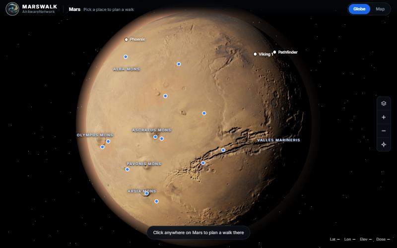
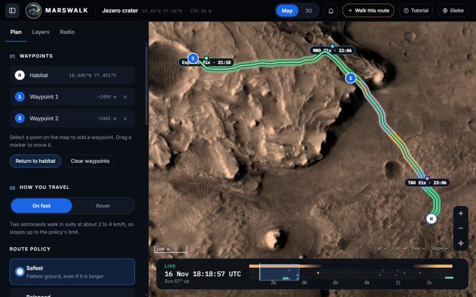
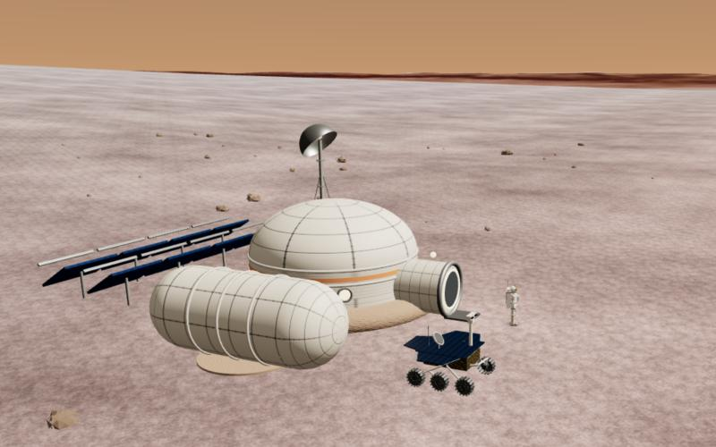

1
Pick a place
Choose any point on Mars. Marswalk builds a 178 km map of it from NASA elevation data in about a minute. Jezero crater is mapped down to 20 m.
Open the globeMarswalk plans safe walks on real Mars terrain, shows who can find you when there is no GPS, and lets you rehearse the route in 3D or VR.
Built on data from NASA's Mars Global Surveyor, Mars Reconnaissance Orbiter, Mars Odyssey, Curiosity and JPL Horizons.

Choose any point on Mars. Marswalk builds a 178 km map of it from NASA elevation data in about a minute. Jezero crater is mapped down to 20 m.
Open the globe
Tap your stops. The planner keeps off steep ground, radiation and radio blind spots, and marks where a satellite or the habitat will fix your position along the way.
How the route is chosen
Step out of the airlock at true scale, drive the rover, call mission control, or put your phone in a headset. Every plan also exports a two-page mission report.
Experience MarsWhere a number is a model or an assumption, the app says so. Every source is listed with a link in the project's documentation.
AirAwareNetwork is a Palestinian, community-led air quality network built on the Internet of Things. At home we keep sensors connected and located across a region. For the NASA Space Apps Challenge 2026 we asked the same question on Mars.
Saeed Hersheh, team lead: the idea, the NASA data pipelines, the route planner, the satellite navigation, and the 3D and VR experience.
Visit airaware.network